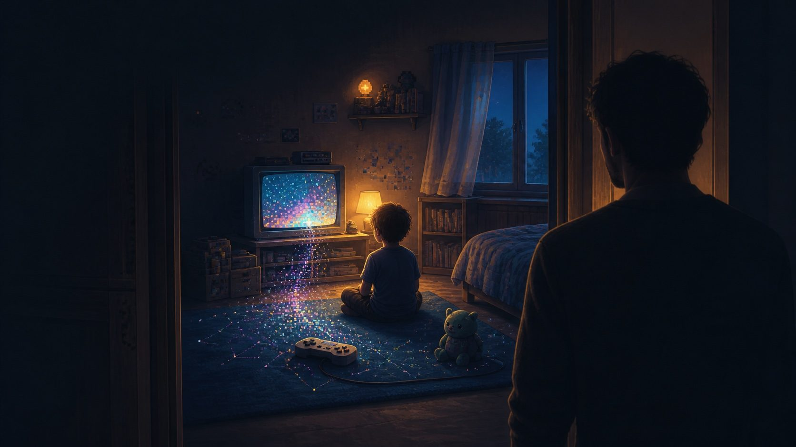

Retro-game nostalgia: why the past is such a comfort

There's a sound that makes grown adults stop everything: the opening music of a childhood game. That 8-bit blip, that start screen, and suddenly you're ten years old again, in a late afternoon that no longer exists. Why do games that are technically "worse", blocky, limited, reach us in a way that million-dollar releases so often can't? The answer isn't in the graphics. It's in what those games hold.
Nostalgia: the sweet ache of return
The word "nostalgia" was coined in the seventeenth century to describe a kind of illness: the suffering of soldiers far from home, overtaken by longing. It joins two Greek roots: nostos (return) and algos (pain). It's literally the pain of wanting to go back. That's what we feel in front of an old game: not exactly missing the game, but missing who we were while we played it. The cartridge is only the door; what lies on the other side is a time, a bedroom, people, a version of you.
The video game as a transitional object
This is where Winnicott comes in, with one of the most beautiful ideas in psychoanalysis. He noticed that the small child chooses a special object, a scrap of blanket, a teddy bear, that is neither the child nor the mother, but sits somewhere in between. Winnicott called it the transitional object (in a 1953 paper): something that holds the warmth of the bond when the mother is away, a portable piece of security. For a lot of people, the childhood game works as a transitional object that outlived time. It carries the sense of a safe, predictable world, where the rules were clear and we knew what to do. Going back to it is being held again.
Why the past seems more orderly
There's a reason the gaming past always feels cozier than the present. Memory isn't a camera: it edits, softens, strips out the boredom and the frustration, and keeps the shine. The retro game you love today is, in part, a construction, a clean version of that experience, without the hours of rage at the impossible level. And the world back then felt simpler because you were simpler: no bills, no deadlines, time trickling by slowly. Nostalgia blends the real game with that golden frame, and it's the frame that moves us.
The comfort that heals and the comfort that traps
Turning to the retro in hard moments is nothing to be ashamed of, it's a legitimate way to soothe yourself, a transitional object we're fully entitled to. The thing to watch is when the past stops being a refuge and becomes a hiding place: when "nothing is as good as it used to be" shuts the door on the present. Healthy nostalgia is the kind that refuels, you visit the past, warm yourself in it, and come back with more energy for the now. The kind that sickens is the one that only wants to stay there, because the present is too frightening.
Keeping the past so you can move on
Deep down, loving the games of your childhood is a way of staying in touch with your own history, of not losing sight of who you were. That 8-bit blip is an emotional anchor, proof of continuity between the child who played and the adult who remembers. Used well, this bridge doesn't trap you: it grounds you. We go back to the old cartridge not to escape the present, but to remember that we always knew how to find joy in simple things, and we carry a little of that back into today.
Into this kind of read, psychoanalysis mixed with games? On my Mercado Livre profile I keep a list of games worth the analysis. 😉
My picks (Mercado Livre) Affiliate links (Mercado Livre). This site may earn a commission on qualifying purchases, at no extra cost to you.Related
The Plucky Squire: psychological analysis and meaning Why the games we hype the most are the ones that disappoint us mostReferences
Winnicott, D. W., Transitional Objects and Transitional Phenomena (1953). · Origin of the term "nostalgia": Johannes Hofer (medical dissertation, 1688).
Comments
What did you think of this piece? Agree, disagree, have another reading of the game? Drop a comment below, I read them all and love keeping the conversation going. 👇